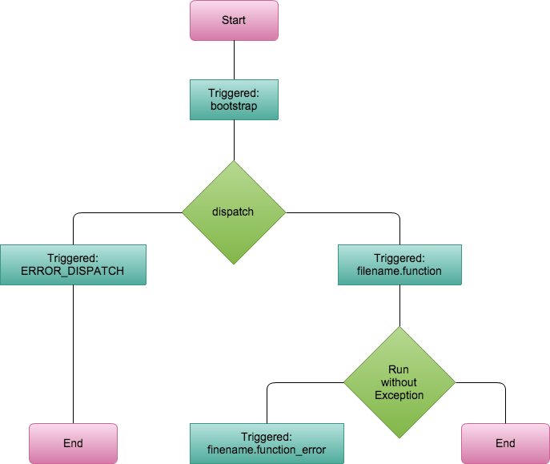
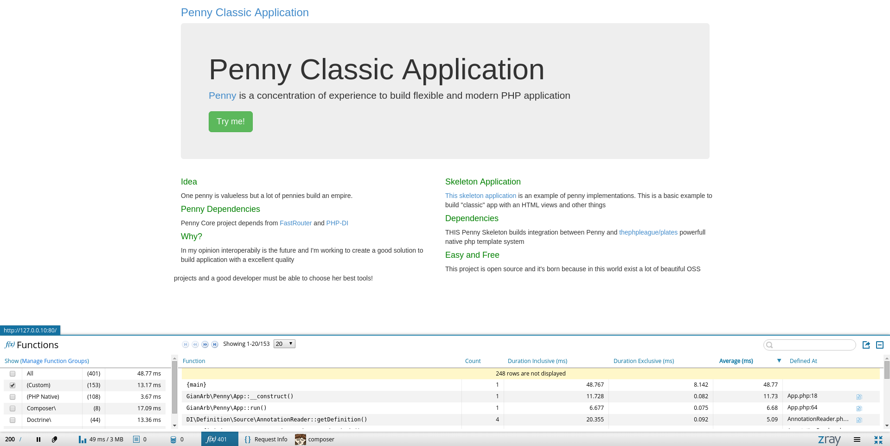

penny

PHP middleware Framework
Developed by GianArb and a little community
Who am I?
I'm Gianluca Arbezzano work in Corley SRL and I am passionate developer
Doctrine Maintainer and Open source contributor
One penny is valueless but a lot of pennies build an empire
- Interoperability and PHP ecosystem
- Microservices aka "simplicity" (not facility)
- Testing
choose best libraries
- PHP-DI to build your services
- Zend\EventManager because this is an event driven middleware
- plates, doctrine and all other libraries to reach your goal!
Flow
In computer programming, a software framework is an abstraction in which software providing generic functionality can be selectively changed by additional user-written code, thus providing application-specific software
cit. Wikipedia
Build YOUR framework, now the PHP ecosystem is awesome!
PHP ecosystem
There are projects for all but we choose for you a lot of them
- PHP-DI
- Zend\Diactoros
- Zend\EventManager
- FastRouter
- Plates
This is a penny-classic-app
classic app
Directory Structure
├── app
│ ├── Controller
│ ├── Form
│ ├── Entity
│ ├── ...
│ └── view
├── bower.json
├── composer.json
├── config
│ └── di.php
├── Gruntfile.js
├── package.json
├── vendor
└── public
└── index.php
classic app
bootstrap
// public/index.php
use GianArb\Penny\App;
use Zend\Diactoros\Response\SapiEmitter;
chdir(dirname(__DIR__));
require 'vendor/autoload.php';
$app = new App();
$emitter = new SapiEmitter();
$emitter->emit($app->run());
classic app
config
// config/di.php
return [
'template' => \DI\object(\League\Plates\Engine::class)
->constructor('./app/view/'),
'router' => function () {
return \FastRoute\simpleDispatcher(function (\FastRoute\RouteCollector $r) {
$r->addRoute('GET', '/', ['ClassicApp\Controller\IndexController', 'index']);
});
},
];
classic app
controller
namespace ClassicApp\Controller;
class IndexController
{
/**
* @Inject("di")
*/
private $di;
public function index(Request $request, Response $response)
{
$response->getBody()->write(' a beautiful job');
return $response;
}
}
POPO - Plain old PHP Object
classic app
You can test application flow
use GianArb\Penny\App;
use GianArb\Penny\Config\Loader;
use FastRoute;
class IndexControllerTest extends PHPUnit_Framework_TestCase
{
private $app;
protected function setUp()
{
$config = Loader::load();
$config['router'] = FastRoute\simpleDispatcher(function (FastRoute\RouteCollector $r) {
$r->addRoute('GET', '/', ['TestApp\Controller\Index', 'index']);
});
$this->app = new App(App::buildContainer($config));
}
public function testIndex(i)
{
// mock request & response and used services
$this->app->run($request, $response);
}
}
Easy to understand
Easy to test
penny test
You can test single controller lightly
use Zend\Diactoros\Request;
use Zend\Diactoros\Response;
use Zend\Diactoros\Uri;
public function testIndex()
{
$request = (new Request())
->withUri(new Uri('/'))
->withMethod('GET');
$response = new Response();
$controller = new IndexController();
// mock controller dependencies
$response = $controller->run($request, $response);
$this->assertEquals(200, $response->getStatusCode());
}
penny test with dependency injection
public function setUp()
{
$config = Loader::load();
$config['router'] = FastRoute\simpleDispatcher(function (FastRoute\RouteCollector $r) {
$r->addRoute('GET', '/', ['TestApp\Controller\Index', 'diTest']);
});
$this->container = App::buildContainer($config);
}
penny test with dependency injection
public function testInjectionHttpFlow()
{
$this->container->set('troyan', 'call me');
$app = new App($this->container);
$request = (new Request())
->withUri(new Uri('/'))
->withMethod('GET');
$response = new Response();
$response = $app->run($request, $response);
$this->assertEquals(200, $response->getStatusCode());
$this->assertEquals('call me', $response->getBody()->__toString());
}
event system
You can increase the application flow with listener
Controller matched is a listener with priority 0
Penny triggers two events controller.method and controller.method_error to catch errors
event system
Use dependency injection to attach your listeners
// config/di.php
return [
'event_manager' => \DI\decorate(function($eventManager, $container) {
$eventManager->attach(
"ERROR_DISPATCH",
[
$container->get(\ClassicApp\EventListener\DispatcherExceptionListener::class),
"onError"
]
);
$eventManager->attach("*_error", [
$container->get(\ClassicApp\EventListener\ExceptionListener::class),
"onError"
]);
return $eventManager;
}),
\ClassicApp\EventListener\ExceptionListener::class
=> \DI\object(\ClassicApp\EventListener\ExceptionListener::class)
->constructor(\DI\get("template")),
\ClassicApp\EventListener\DispatcherExceptionListener::class
=> \DI\object(\ClassicApp\EventListener\DispatcherExceptionListener::class)
->constructor(\DI\get("template")),
...
];
listener
class ExceptionListener
{
private $template;
public function __construct($template)
{
$this->template = $template;
}
public function onError($event)
{
$e = $event->getException();
$response = $event->getResponse()->withStatus($e->getCode());
$event->setResponse($response);
$response->getBody()->write($this->template->render("error/50x", [
'title' => $e->getMessage(),
'exception' => $e,
]));
}
}
"pseudo" flow
// config/di.php
return [
'router' => function () {
return \FastRoute\simpleDispatcher(function (\FastRoute\RouteCollector $r) {
$r->addRoute('GET', '/', ['ClassicApp\Controller\Index', 'dashboard']);
});
},
'event_manager' => \DI\decorate(function($eventManager, $container) {
$eventManager->attach("index.dashboard", [
$container->get(\ClassicApp\EventListener\AuthListener::class), "check"
], 100);
$eventManager->attach("index.dashboard", [
$container->get(\ClassicApp\EventListener\LogListener::class), "info"
], 1000);
return $eventManager;
}),
\ClassicApp\EventListener\LogListener::class
=> \DI\object(\ClassicApp\EventListener\LogListener::class)
->constructor(\DI\get("monolog")),
\ClassicApp\EventListener\AuthListener::class
=> \DI\object(\ClassicApp\EventListener\AuthListener::class)
->constructor(\DI\get("auth_service")),
...
];
Stop flow
namespace \ClassicApp\EventListener;
class AuthListener
{
public function check($event)
{
$request = $event->getRequest();
if($this->authService->isAuthorized($request) {
return $event;
}
$event->stopPropagation();
}
}
Interoperability without abstaction layer
I'm non interested to help you to switch between libraries
We are not crazy, monday plates, sunday zend\view is not our use case
We are very happy to see your implementation, psr-7 and container-interop are examples of interoperability
With penny you can change also the http layer
use GianArb\Penny\App;
use GianArb\Penny\Config\Loader;
use FastRoute;
use Symfony\Component\HttpFoundation\Request;
use Symfony\Component\HttpFoundation\Response;
$config = Loader::load();
$config['router'] = FastRoute\simpleDispatcher(function (FastRoute\RouteCollector $r) {
$r->addRoute('GET', '/', [get_class($this), 'index']);
});
$config['dispatcher'] = \Di\object('GianArb\PennyTest\Utils\FastSymfonyDispatcher')
->constructor(\Di\get("router"));
$this->app = new App(App::buildContainer($config));
With penny you can change also the http layer
$this->app->getContainer()
->get("event_manager")
->attach("symfonykerneltest.index_error",
function ($e) use (&$requestTest, &$responseTest) {
$requestTest = $e->getRequest();
$responseTest = $e->getResponse();
});
$request = Request::create("/", "GET");
$response = new Response();
$this->app->run($request, $response);
$this->assertSame($request, $requestTest);
$this->assertSame($response, $responseTest);
Penny use Z-ray Zend Server-less
Easy to debug with docker and zray
Thanks github.com/fntlnz